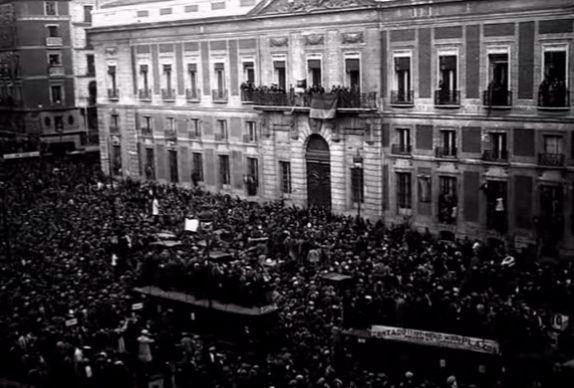
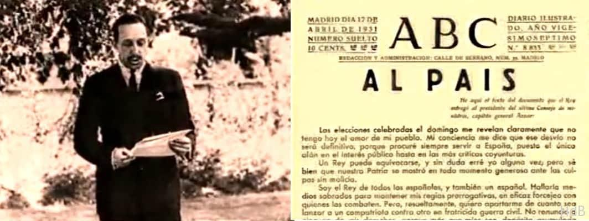
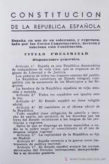
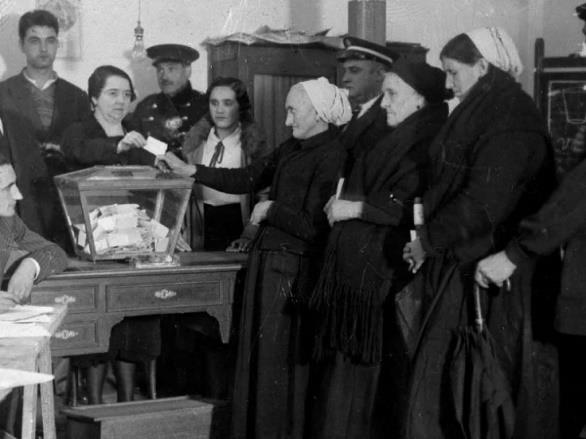
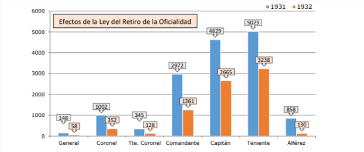
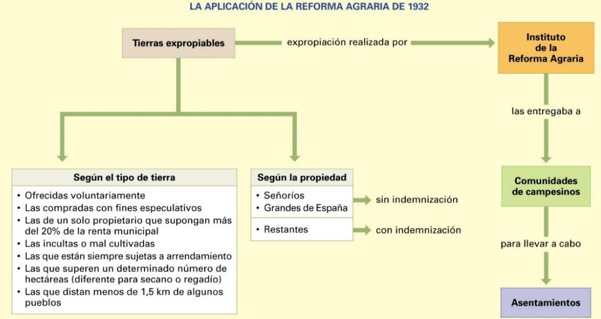
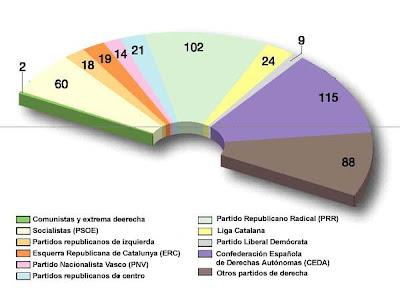
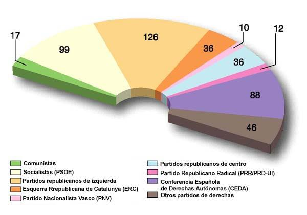

Tema 1: La Segunda República Española (1931 - 1936)
Un ambicioso intento de modernización democrática, reformas estructurales y la consiguiente polarización social y política del país.
 Eje cronológico curricular que resume los principales periodos y acontecimientos legislativos de la Segunda República
Eje cronológico curricular que resume los principales periodos y acontecimientos legislativos de la Segunda República
1. La Proclamación de la República y la Constitución de 1931
El resultado de las elecciones municipales del 12 de abril de 1931, celebradas mediante sufragio universal masculino, evidenció un rotundo vuelco político en el país. Aunque en el conjunto rural los concejales monárquicos fueron mayoría debido al arraigo caciquil, las candidaturas republicano-socialistas arrasaron en 41 de las 50 capitales de provincia y grandes núcleos industriales. La movilización urbana transformó la consulta electoral en un auténtico plebiscito popular contra la Corona.
El 14 de abril por la mañana, la localidad de Éibar proclamó el nuevo régimen en primer lugar, seguida por las grandes capitales. Ante la absoluta pérdida de apoyos políticos y militares, el rey Alfonso XIII decidió suspender deliberadamente el ejercicio del poder real y marchar hacia el exilio para evitar una fratricida guerra civil. Esa misma tarde, los representantes de los partidos firmantes del Pacto de San Sebastián constituyeron un Gobierno Provisional de la República presidido por el político conservador Niceto Alcalá-Zamora.
En mayo de 1931 estallaron los primeros incidentes graves tras provocaciones monárquicas, desencadenando una ola de quema de conventos e iglesias en Madrid y Andalucía ante la pasividad inicial del Gobierno, agriando tempranamente las relaciones entre el nuevo régimen y la Iglesia Católica.

Multitudinaria celebración popular con banderas tricolores en la Puerta del Sol de Madrid la tarde del 14 de abril
Retrato del rey Alfonso XIII junto a un extracto de su manifiesto de despedida al pueblo español¿Quieres analizar el ambiente social y los discursos históricos que acompañaron la proclamación del 14 de abril de 1931?
🎬 Vídeo complementario: Ver imágenes de archivo de la proclamación de la II República ➡️La Constitución de 1931: Un Marco Progresista y Polémico
El 28 de junio de 1931 se celebraron elecciones a Cortes Constituyentes provinciales, arrojando una indiscutible victoria para la coalición republicano-socialista. El Partido Socialista (PSOE) y el Partido Republicano Radical de Alejandro Lerroux lideraron la nueva Cámara Unicameral. Tras meses de intensos debates, se aprobó en diciembre una nueva Constitución de marcado carácter democrático, laico y reformista, cuyas bases fundamentales fueron:

Edición impresa oficial de la Constitución aprobada por las Cortes Constituyentes🏛️ Los Pilares de la Constitución Democrática de 1931
- Soberanía Popular y Estado Integral: El poder emana del pueblo y se configura un parlamento unicameral (Congreso de los Diputados). Se reconoce la posibilidad de conceder Estatutos de Autonomía a las regiones con sentimiento nacionalista.
- Sufragio Universal Pleno y Voto Femenino: Se rebaja la edad de voto a los 23 años y, tras el brillante debate parlamentario liderado por la abogada Clara Campoamor (frente a las objeciones tácticas de Victoria Kent), se reconoce por primera vez en la historia de España el derecho de voto a las mujeres.
- Aconfesionalidad y Cuestión Religiosa (Arts. 26 y 27): Se proclama la separación estricta de la Iglesia y el Estado, la libertad de cultos, la secularización de cementerios, la ley de divorcio y matrimonio civil, y la prohibición a las órdenes religiosas de dedicarse a la enseñanza o la industria, suprimiéndose el presupuesto de culto y clero.

Imagen: Mujeres de la localidad guipuzcoana de Éibar ejerciendo por primera vez su derecho al voto en noviembre de 19332. El Bienio Reformista y el Impulso Modernizador (1931 - 1933)
Bajo la jefatura del nuevo presidente del Gobierno, Manuel Azaña (actuando Niceto Alcalá-Zamora como presidente de la República), la conjunción republicano-socialista inició un ambicioso programa de reformas para atacar simultáneamente los desequilibrios y males históricos de España:
A. La Reforma Militar

Gráfica comparativa de los jefes y oficiales en activo de 1931 y los mandos militares acogidos voluntariamente al retiroConcebida por el propio Manuel Azaña desde la cartera de Guerra, pretendía crear un ejército profesional, leal a la República y alejado de las tradicionales injerencias políticas. Para ello, promulgó la Ley de Retiro de la Oficialidad (1931), que daba la opción a los oficiales en activo de retirarse con sueldo íntegro si no deseaban prometer su lealtad al nuevo régimen constitucional(retirándose casi 10.000 oficiales).
La reforma redujo a la mitad el número de oficiales, cerró la Academia Militar de Zaragoza (vivero de golpistas dirigido por el general Francisco Franco) y creó la Guardia de Asalto como fuerza antidisturbios fiel a la República. Sin embargo, generó una profunda animadversión entre el sector de los militares africanistas, hostiles a las reformas que culminó en el fracasado intento de golpe de Estado del general Sanjurjo (la Sanjurjada) en agosto de 1932
B. La Reforma Agraria
La reforma agraria constituyó el proyecto socioeconómico de mayor envergadura emprendido por el nuevo régimen. Su objetivo básico era terminar con la concentración latifundista del centro y sur peninsular (donde más de la mitad de la tierra cultivable pertenecía a terratenientes de la nobleza y oligarquía, frente a más de dos millones de jornaleros hambrientos y sin tierras) y crear una clase media de propietarios campesinos que dinamizara el mercado nacional.

Esquema didáctico sobre los tipos de tierras expropiables, el papel del Instituto de Reforma Agraria (IRA) y los asentamientos de campesinosEn septiembre de 1932 se aprobó la Ley de Reforma Agraria, encomendando su gestión al Instituto de la Reforma Agraria (IRA). La ley preveía la expropiación sin indemnización de las tierras de los Grandes de España y la nacionalización con indemnización de las fincas deficientemente cultivadas o arrendadas de forma sistemática. No obstante, las dificultades burocráticas, la escasez presupuestaria y la feroz obstrucción de los propietarios limitaron su aplicación práctica: solo unas 12.000 familias fueron asentadas de las 60.000 previstas, decepcionando a los campesinos y desatando una fuerte conflictividad social en el agro andaluz y extremeño.
C. Las Reformas Autonómicas, Educativas y Laborales
- La cuestión autonómica: El Estatuto de Nuria de Cataluña fue aprobado en referéndum por el 99% de los votos y ratificado por las Cortes en 1932, devolviendo a la región su autogobierno a través de la Generalitat dirigida por Francesc Macià (y posteriormente por Lluís Companys). En el País Vasco, el tradicionalista Estatuto de Estella impulsado por el PNV fue demorado por las Cortes, y el Estatuto de Galicia fue votado en junio de 1936, viéndose ambos procesos bloqueados por el estallido bélico.
- La reforma educativa: Se crearon más de 10.000 escuelas de enseñanza primaria y 7.000 plazas de maestros, elevando el presupuesto educativo un 50%. Se adoptó el modelo de escuela mixta, laica, obligatoria y gratuita, promoviendo las misiones pedagógicas e iniciativas teatrales como La Barraca de Federico García Lorca para llevar la cultura al mundo rural.
- Las reformas sociales y laborales: Impulsadas por el líder socialista Francisco Largo Caballero desde el Ministerio de Trabajo, fijaron la jornada laboral de 40 horas en el campo, jurados mixtos para mediar obligatoriamente en caso de desacuerdos obrero-patronales, y la regulación de convenios colectivos.
¿Quieres profundizar en las tensiones y el choque de intereses que provocaron la reforma de la Iglesia, el campo y el Ejército?
🎬 Vídeo complementario: Analizar el Bienio Reformista de Manuel Azaña ➡️3. El Bienio Radical-Cedista y la Revolución de 1934
La dureza de las reformas, el descontento de los sectores agrarios y la trágica y cruenta represión de la insurrección anarquista en los Sucesos de Casas Viejas (Cádiz, enero de 1933) arruinaron el prestigio moral del Gobierno de Manuel Azaña. Desgastada la alianza, Azaña dimitió y el presidente Niceto Alcalá-Zamora convocó nuevas elecciones generales para noviembre de 1933.

Composición de las Cortes españolas tras la victoria del centro-derecha en las elecciones de 1933Las elecciones de noviembre de 1933 (en las que las mujeres votaron por primera vez) arrojaron un notable giro conservador. La derecha concurrió unida bajo la Confederación Española de Derechas Autónomas (CEDA) de José María Gil-Robles, mientras que las izquierdas acudieron completamente desunidas y diezmadas por la abstención anarquista de la CNT. La CEDA (115 escaños) y el Partido Radical (102 escaños) de Alejandro Lerroux resultaron victoriosos. El presidente de la República confió el Gobierno a Lerroux solo, asistido parlamentariamente por el apoyo externo de la CEDA.
Durante este periodo (1933 - 1935), conocido como el bienio conservador o de rectificación, se desmantelaron o frenaron gran parte de las reformas del bienio anterior:
- Se paralizaron la Ley de Reforma Agraria y las expropiaciones de tierras a los Grandes de España.
- Se frenó la tramitación del Estatuto de Autonomía del País Vasco.
- Se aprobó una amnistía para los militares golpistas de la Sanjurjada de 1832 (liberando al general Sanjurjo) y se devolvió el presupuesto para el mantenimiento del culto eclesiástico.
🩸 El Clímax de la Tensión: La Revolución de Octubre de 1934
El ala más radical del PSOE y la UGT, liderada por Francisco Largo Caballero, interpretó el viraje conservador y el posterior anuncio del ingreso de tres ministros de la CEDA en el Consejo de Ministros (5 de octubre de 1934) como el preludio inminente de la implantación del fascismo en España. Como respuesta, la CNT y la UGT convocaron una huelga general que degeneró en la Revolución de Octubre de 1934, cuyos focos más alarmantes fueron:
- La Revolución de Asturias: En las cuencas mineras asturianas, obreros y mineros armados con dinamita y fusiles protagonizaron una auténtica revolución social y militar, unificando fuerzas (UHP: Uníos Hermanos Proletarios). Sustituyeron ayuntamientos por comités revolucionarios colectivistas. El Gobierno encomendó la campaña de represión al general Francisco Franco, quien envió unidades de la Legión y Regulares de África. El balance fue brutal: más de 1.000 mineros muertos, unos 500 soldados fallecidos, 2.000 heridos y 30.000 detenciones políticas en todo el país.
- La Rebelión en Cataluña: El presidente de la Generalitat, Lluís Companys, se unió a la protesta proclamando desde el balcón gubernamental el Estado Catalán dentro de la República Federal Española. La intentona fue dominada en horas por las tropas del general Batet; Companys y todo su gabinete acabaron encarcelados y el Estatuto de Autonomía de Cataluña fue suspendido de inmediato.
4. El Frente Popular y la Primavera Trágica (1936)
La inestabilidad del bienio conservador culminó en el otoño de 1935 con la revelación de escandalosas tramas de corrupción vinculadas al juego y las finanzas públicas, como el caso del estraperlo, que arruinó la credibilidad del Partido Radical de Alejandro Lerroux. Ante la parálisis del Gobierno, Niceto Alcalá-Zamora decidió disolver las Cortes y convocar elecciones generales para el 16 de febrero de 1936.

Distribución de los escaños del Congreso de los Diputados tras la trascendental victoria de la coalición del Frente PopularLa sociedad española acudió a las urnas fuertemente dividida. Las fuerzas de izquierda (republicanos, socialistas, comunistas y el catalanismo) integraron la coalición del Frente Popular, cuyo programa demandaba la amnistía general para los detenidos de 1934 y la aplicación implacable de las reformas. Las fuerzas de derecha concurrieron unidas bajo el Bloque Nacional (CEDA, carlistas y Renovación Española). La victoria parlamentaria del Frente Popular fue arrolladora (278 escaños frente a 146 de la derecha), aunque muy reñida en votos populares.
El líder de la izquierda republicana, Manuel Azaña, fue investido presidente de la República en sustitución de Alcalá-Zamora, recayendo la presidencia del Gobierno en el político gallego Santiago Casares Quiroga. El nuevo Gobierno excarceló de inmediato a más de 30.000 presos políticos, restituyó el Parlamento catalán con la puesta en libertad de Lluís Companys y reanudó con fuerza la aplicación de la reforma agraria (propiciando la ocupación masiva de fincas por más de 60.000 campesinos en Extremadura).
⚠️ La Primavera Trágica de 1936: Hacia el Abismo de la Guerra
La victoria de las izquierdas desató una extrema agitación social y un clima de gran violencia callejera. En las ciudades proliferaron las huelgas y los incendios de iglesias y conventos por parte de exaltados populares, mientras en los campos del centro y sur peninsular (especialmente en Extremadura el 25 de marzo de 1936) decenas de miles de jornaleros se adelantaban de forma espontánea a la legislación ocupando de forma ilegal las tierras de la oligarquía absentista.
En este convulso ambiente, el partido de ideología fascista Falange Española, dirigido por José Antonio Primo de Rivera, fomentó el terrorismo urbano y los choques armados con los militantes socialistas y comunistas aplicando lo que el dictador denominaba de forma bélica "la dialéctica de los puños y las pistolas".
¿Deseas analizar la espiral de violencia política que fracturó las instituciones en la primavera de 1936?
🎬 Vídeo complementario: La andadura del Frente Popular hacia la Guerra Civil ➡️Ante la inminencia de un pronunciamiento, el Gobierno optó por alejar de los centros de poder a los generales sospechosos: el general Emilio Mola fue destinado a Navarra, el general Francisco Franco a Canarias y el general Manuel Goded a Baleares. Sin embargo, esta medida facilitó que Mola actuara como el planificador y cerebro indiscutible de la conspiración, asumiendo el cargo secreto de "El Director". El complot militar, financiado por grandes banqueros e industriales de derecha con el apoyo tácito de Alemania e Italia, se aceleró de forma definitiva tras los magnicidios de julio de 1936: el asesinato del Teniente Castillo (de la Guardia de Asalto) a manos de falangistas, respondido en cadena la madrugada del 13 de julio con el asesinato policial del líder monárquico y de la oposición derechista, José Calvo Sotelo. La insurrección militar estalló en Marruecos el 17 de julio, abriendo las puertas a tres años de guerra.
5. La Segunda República en Canarias: Juan Negrín, Autonomía y Movilización Social
La proclamación de la Segunda República el 14 de abril de 1931 fue acogida con jubilar entusiasmo en las principales ciudades de las islas. En las elecciones municipales, la conjunción republicano-socialista logró el control de los ayuntamientos de Las Palmas de Gran Canaria y Santa Cruz de Tenerife, abriendo paso a una intensa democratización de la vida pública insular.
Durante este periodo descolló con luz propia la figura del grancanario Juan Negrín López, prestigioso médico y catedrático de Fisiología en la Universidad Central de Madrid. Elegido diputado del PSOE por la provincia de Las Palmas en todas las elecciones de la República, Negrín desempeñó una sobresaliente labor de gestión en las Cortes y terminaría convirtiéndose en la figura política clave del bando republicano durante la Guerra Civil al asumir la Presidencia del Gobierno en 1837.
🇮🇨 El Proyecto de Estatuto de Autonomía de Canarias (1931 - 1936)
Al igual que ocurrió en Cataluña, el País Vasco y Galicia, la Constitución de 1931 abrió la vía para la descentralización del archipiélago. Destacados políticos e intelectuales canarios, como José Franchy Roca (fundador del Partido Republicano Federal canario, Fiscal General de la República y Ministro de Industria y Comercio en 1933) y Francisco Gil Roldán (presidente del Cabildo Insular de Tenerife), lideraron la redacción de una propuesta de Estatuto de Autonomía para Canarias.
El proyecto buscaba superar pacífica y administrativamente el histórico pleito insular, garantizando una representación paritaria entre las dos provincias y dotando a las islas de competencias propias en comercio, puertos e impuestos. Aunque la tramitación parlamentaria avanzó sustancialmente bajo el Frente Popular en 1936, el estallido del golpe militar frustró su aprobación final.
Asimismo, el quinquenio republicano se caracterizó en Canarias por una notable dinamización del movimiento obrero. En las zonas portuarias del Puerto de La Luz y el Puerto de Santa Cruz, así como en los valles agrícolas de exportación de plátanos y tomates, se organizaron activos sindicatos de la UGT y de la CNT, promoviendo huelgas por la mejora de las condiciones salariales y la jornada de 8 horas.